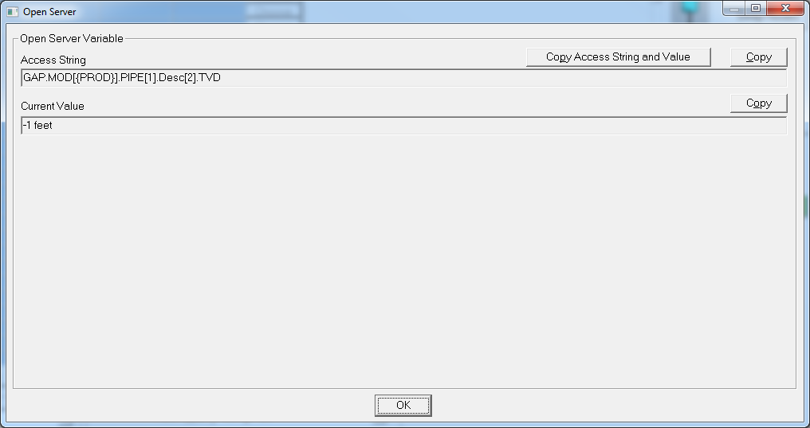

7. GAP interface¶
GAP provides a comfortable set of API via the OpenServer interface. This
interface works, of course, only on Windows and provides a CLI access to
most of the simulator features. Pyfas is not required to use
OpenServer.
This example uses pywin32, but any package providing a COM interface should work:
# Connecting to the open GAP filefrom win32com.client import Dispatchgap = Dispatch('PX32.OpenServer.1')The previous command gives the possibility to interact with an open
GAP model (open via the UI). In case more than one model is open, the
last one opened is considered.
It is also possible to access to closed models:
gap.docommand('GAP.START')gap.docommand(r'GAP.OpenFile("C:\example\example.gap")')Two basic operations are possible:
getvaluesetvalue
Pretty straightforward, isn’t it?
# This command shows the flow correlation for the Pipe1 of the model {PROD}gap.getvalue("GAP.MOD[{PROD}].PIPE[1].PIPECORR")Out[4]: 'MukerjeeBrill'To set a value instead:
# This command sets the flowrate of SOURCE1 to 10 (it uses predefined unit)gap.setvalue("GAP.MOD[{PROD}].SOURCE[{Source1}].Rate", 10)It looks complicated but a good reference guide is available and, even
better, with the right click in the GUI the corresponding OpenServer
command can be showed in the OpenServer window:
